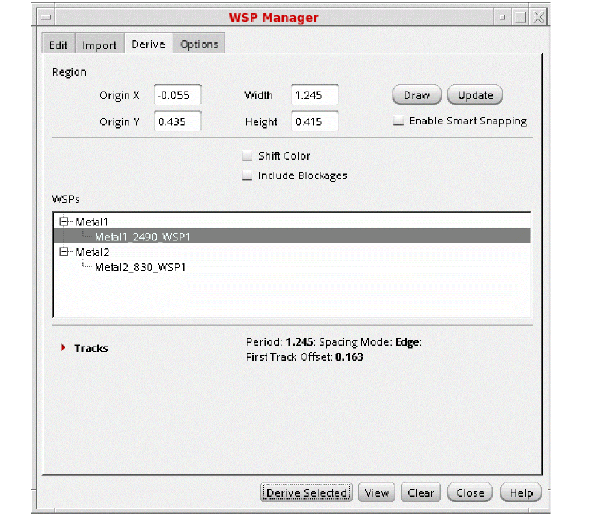
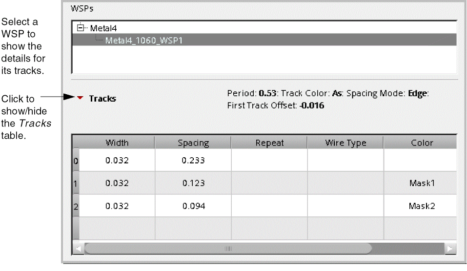
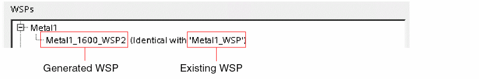

Generate of WSPs from Existing Shapes
To generate WSP tracks, follow the steps listed below:

-
Set the search box Region using one of these methods:
- Click Draw, then draw the rectangular search box in the canvas.
- Set the Origin X, Origin Y, Width, and Length fields manually, then click Update.
Width spacing patterns are generated for the shapes in the search box, subject to the WSP Manager Derive Options, and are listed in the WSPs group box, grouped by layer.
If a generated WSP matches an existing WSP in the current design or technology, it is identified in the WSPs group box as follows:
 -
(Optional) Double-click a WSP name in the WSPs list to edit the name.
Valid names can include only letters (A-Z, a-z), digits (0-9), underscore (_), and hyphen (-), and cannot begin with an underscore or a hyphen. - Choose one or more WSPs in the WSPs group box by doing one of the following:
-
Click Derive Selected to import the selected WSPs to the current design and show the tracks in the canvas.
For a video overview of this feature, see WSP Manager: Generating WSPs from Shapes on Cadence Online Support.
WSP Manager Derive Options
When generating WSPs from existing shapes, you have the following options:
-
Enable Smart Snapping
Snaps to objects in the canvas when drawing the search box. -
Shift Color
Shifts track colors when a pattern is repeated. -
Include Blockages
Generates tracks for blockage shapes.
Return to top